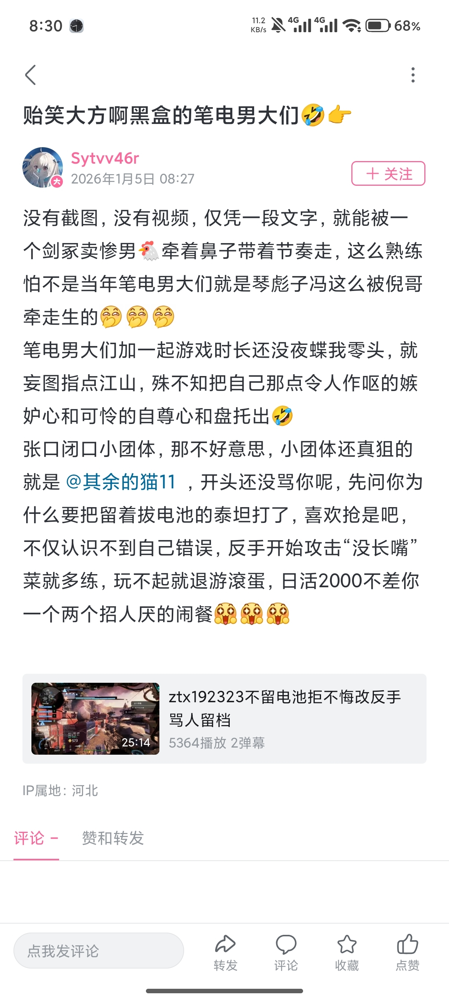
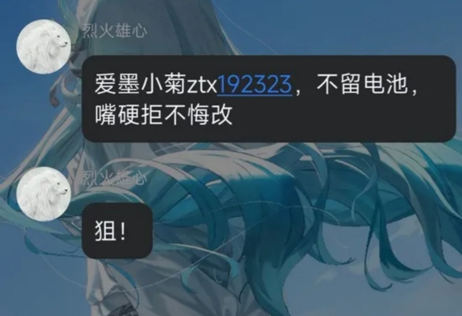
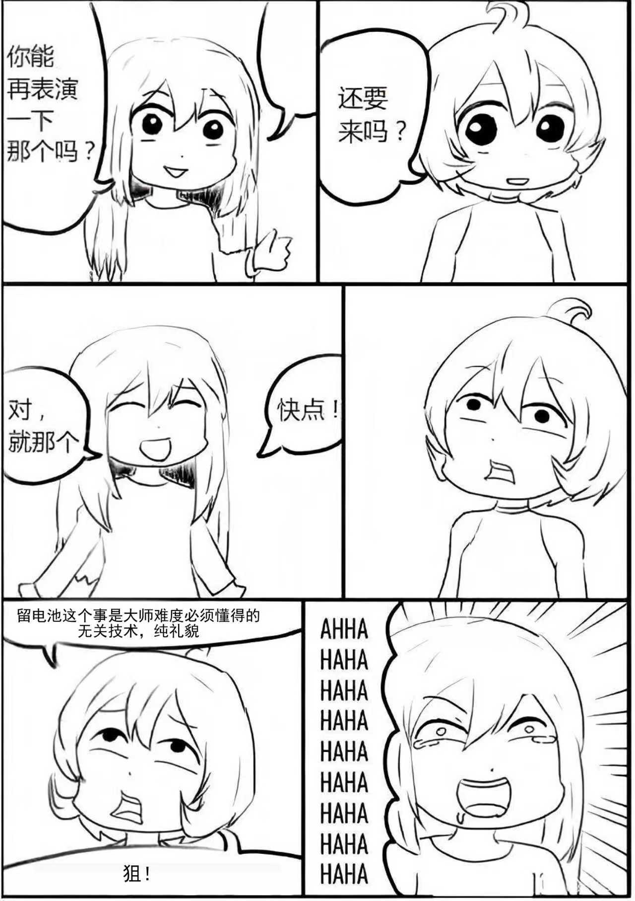

近期舆情分析
没想到，玩泰坦陨落以来第一篇舆情分析来得这么快。
这件事没啥好说的，无论是理论分析还是实际舆论导向，6pRL（Sytvv46r），最好的解决方法就是速速切割，否则就只会留下“老资历们沆瀣一气，欺负萌新”的评价。
首先看看这个“ztx192323不留电池拒不悔改反手骂人留档”视频吧（BV1spinBREpe），标题就很有说法，“不留电池拒不悔改反手骂人”这几个字一上来，一下就在泰坦陨落玩家中把自己的正义性立起来了——这东西不管是对于萌新还是老登，都是极其严重的指控。但是，事实真是的这样吗？不如往下看。
我们来看15分37秒，6pRL弹射之后，射手飞弹，拔电池，再一个射手飞弹把迫击炮打成黄血。此时场上还剩下一个满血迫击炮，于是他决定把电池给队友的自动泰坦。我们通过小地图可以看出来，一个队友通过拔电池解决了黄血迫击炮，另一个队友拔了剩下的迫击炮的电池，ztx192323打掉了剩下的血并处决了迫击炮，从他的角度上来说，ztx192323确实没给他留电池。
16分23秒，6pRL开麦并发言；16分48秒，ztx192323回复“你没长嘴吗”，6pRL再次开麦并惹怒ztx192323说“你要拔电池不会说啊”。之后6pR不断开麦并消极游戏导致炸采集机。
需要明确一点，6pRL的视频里没有录下自己的声音，自然也不知道他到底说了什么（不过听ztx192323的语气，6pRL没说什么好话）。这里应该是录屏软件的问题，不是6pRL恶意剪掉的，阴谋论可以省省了。
首先，我们知道，6pRL并没有开麦告知队友，说明自己把电池给队友了，要重新拔电池的问题。其次，剩下的队友也拔到了电池，ztx192323作为残血帝王偷电池处决没有任何问题。最重要的是，多亏了他的mod，我们可以看出，他的队友是有多余的电池的，只需要跟队友说一句“我把电池给你的泰坦了，我叫了泰坦之后你把电池给我的泰坦”就行了，但6pRL并没有这么做，而且消极游戏，根本不考虑两个认真打的队友的感受。
之后6pRL发布如下言论，ztx192323也在黑盒发帖，引爆舆论。以下为截图。
  6pRL而后由于发表极端言论被封号。
这次事件的经过大致便是如此。舆论引爆后，小黑盒社区涌入大量围观群众，围绕“老资历欺负萌新”“小团体”和对6pRL的人身攻击展开团建，实质上已经脱离了谈论范围，开始赛博猎巫了。
本次事件焦点：
①6pRL树立受害者人设失败，并发布不当言论败坏路人缘，丧失群主基础。
②ztx192323作为萌新被挂，6pRL作为老资历挂人，受害者ztx192323符合观众同情弱势方的第一立场。
③社区未及时与6pRL切割，以至于引火上身。
解决方法：切割6pRL，然后等待热度下降后清理证据，可安抚ztx192323使之删帖。
倒是可以说一句，TTF2的社区环境比ESO更烂，而且这次出圈也更彻底。此次事件将导致泰坦陨落2路人缘崩坏，并降低萌新入坑意愿。至于解决最根本上的社区建设问题，我已不报任何希望。
创建时间：2026/01/05
上次修订时间：2026/01/05